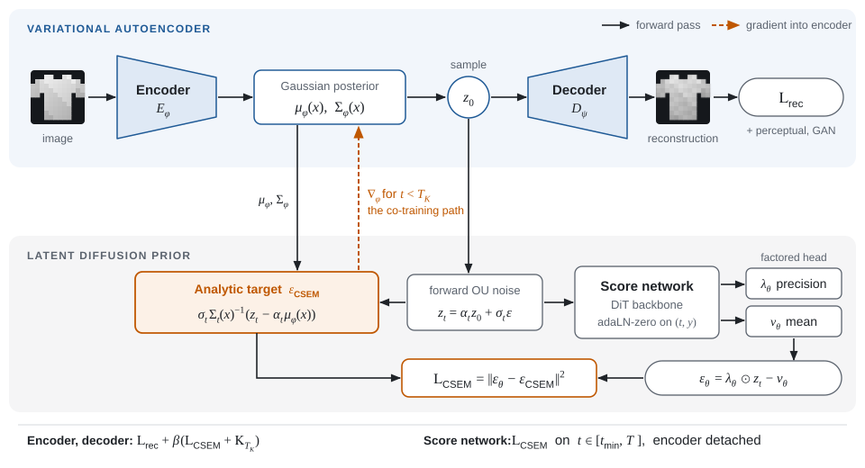
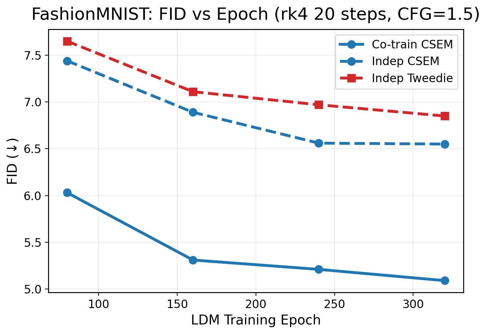
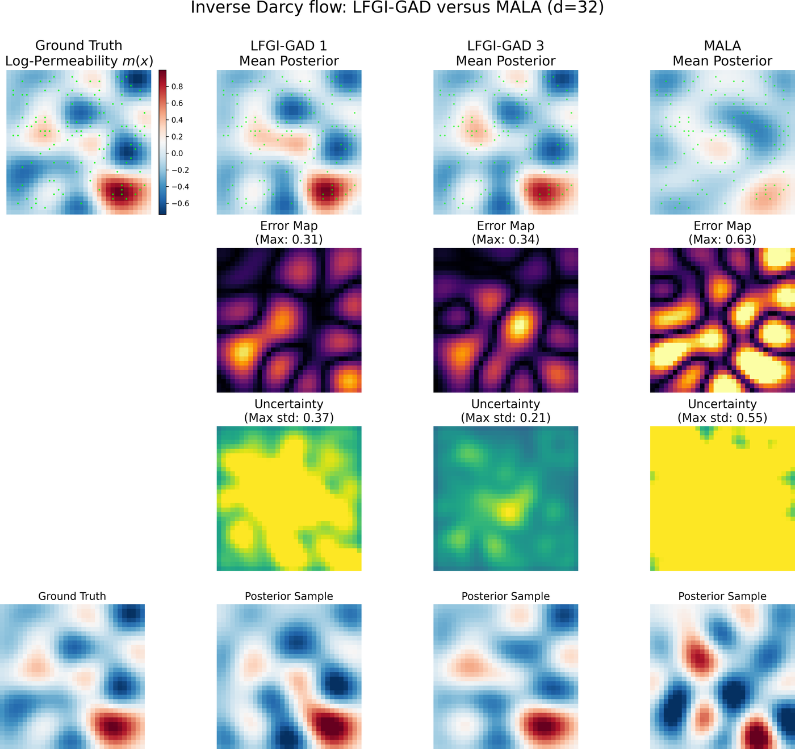
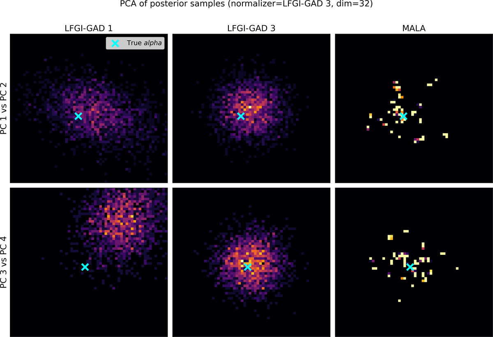
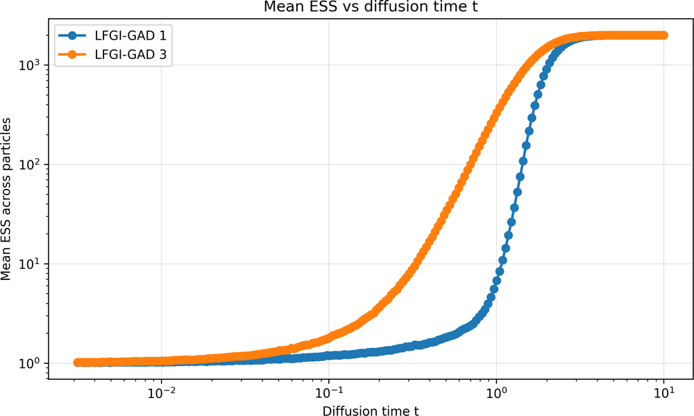
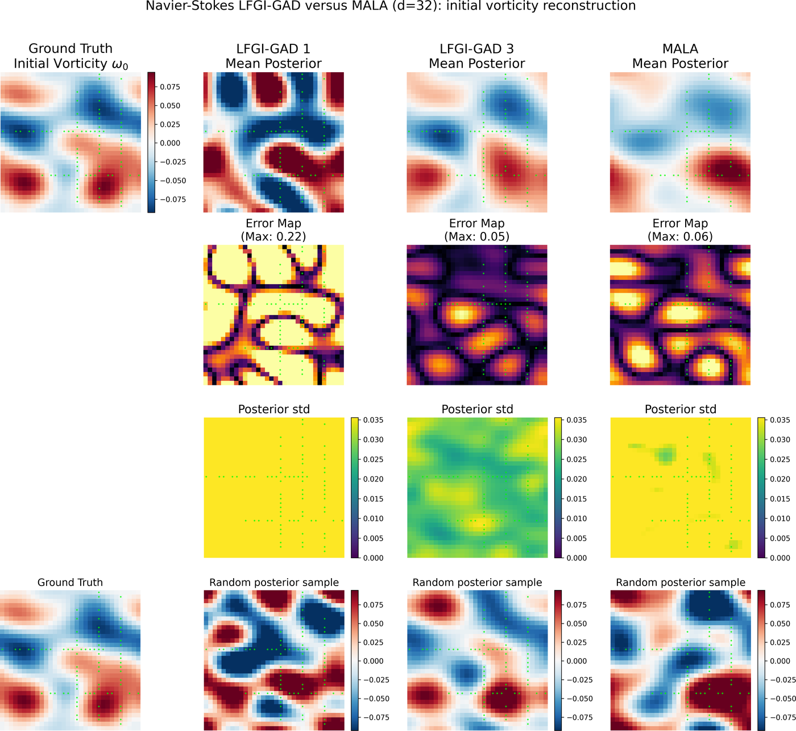
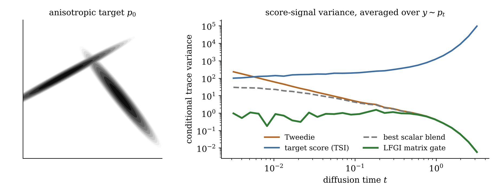
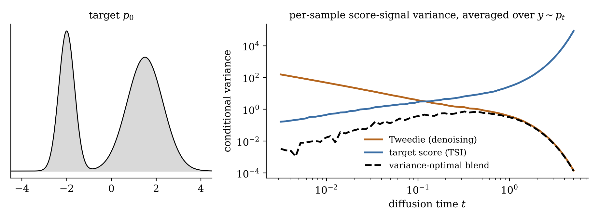

Research
Diffusion models need the score of every noise-perturbed marginal along the forward process. My projects ask how to get those scores when the standard ingredient is missing or noisy: when the latent space of a generative model is itself being learned, or when the target is an unnormalized posterior with no samples.
Jump to: CSEM · Gated Action Dissipation · Laplace–Fisher Gate Identities · Target Score Identity
Latent generative modeling
CSEM: end-to-end training of latent diffusion models In progress
Latent diffusion models are trained in two disconnected stages: an autoencoder first, then a score network on its frozen latents. Component Score Expectation Matching (CSEM) trains both together. The change is in the score target. Denoising score matching regresses onto the noise that was sampled; CSEM regresses onto the analytic score of each diffused encoder posterior. That target is a closed-form function of the encoder's mean and covariance, so the score loss passes gradients back into the encoder.

What the analytic target changes
- Same optimum, less target noise. The aggregate latent score is the conditional expectation of the component scores (the CSEM identity), so regressing onto them is a Rao–Blackwellized form of denoising score matching.
- An encoder signal that does not reward collapse. Joint training with the standard denoising loss lets the encoder shrink its posterior variance to drive that loss toward zero. In our runs the latent collapses within a few epochs and the learned prior becomes degenerate even though reconstructions stay sharp. CSEM removes exactly this incentive.
- An exact training objective. With physical-time weighting, the CSEM loss up to a representation horizon TK, plus an analytic terminal KL, equals score-estimation error plus the rate I(X; Z0) plus the aggregate mismatch to N(0, I) at TK. Moving TK interpolates between a β-VAE, a standard two-stage LDM, and fully joint training.
Results

| Training regime | Fashion-MNIST | CIFAR-10 |
|---|---|---|
| Two-stage, denoising target | 6.84 | 22.78 |
| Two-stage, CSEM target | 6.69 | 21.55 |
| Co-trained, CSEM | 5.03 | 17.15 |
| Autoencoder reconstructions | 4.24 | 14.35 |
Swapping the target while keeping the autoencoder frozen moves FID only slightly, from 6.84 to 6.69 on Fashion-MNIST and from 22.78 to 21.55 on CIFAR-10. Most of the improvement appears once the CSEM objective is allowed to shape the encoder (5.03 and 17.15). The gain comes from a latent representation that is easier to model and to integrate in few steps, not from the estimator alone.
Protocol. All three regimes share the score backbone, the sampler, and fixed evaluation noise banks; FID uses InceptionV3 features against real test images. The guidance scale was chosen for the best co-trained FID (1.5 on Fashion-MNIST, 3.0 on CIFAR-10) and then applied to every regime. These results come from an earlier training configuration. Updated runs with the revised architecture, the terminal-KL scale anchor, and seed-level uncertainty are in progress.
Implementation
- PyTorch; LightningDiT score backbone with adaLN-zero conditioning on diffusion time and class label.
- Factored natural-parameter output head (precision ⊙ latent − mean), read off the CSEM identity, with a gauge-fixing auxiliary regression that touches only the head.
- VAE trained with reconstruction, perceptual, and PatchGAN adversarial losses; class-conditional encoder and classifier-free guidance.
- Routed two-horizon gradients: the representation loss acts on [tmin, TK], and the score network trains on [tmin, T] with the encoder detached.
Diffusion sampling for Bayesian inverse problems
In a Bayesian inverse problem the target density is known up to a constant, together with its score and (Gauss–Newton) curvature, but there are no target samples. These three projects build score estimators from that information and use them to transport samples to the posterior.
Gated Action Dissipation for Bayesian inverse problems Manuscript
Gated Action Dissipation (GAD) samples a posterior by repeated diffusion transport. Each round rebuilds the reverse-diffusion score from the current sample bank and the target's derivatives, blended through the LFGI matrix gate (below) evaluated under the current law, and pushes the bank through the reverse SDE again. No importance weighting, resampling, or inner Markov chain is used, and the density of the transported law is never needed.
- Convergence theory. A round decreases KL to the target whenever the rebuilt score's error stays a strict fraction of the target/current relative score, and the iteration contracts in KL for near-Gaussian targets.
- What the iteration can see. The gated action, the part of the relative score visible to the rebuilt score, decays across rounds and controls the remaining discrepancy. It also vanishes at fixed points that put the wrong weights on well-separated modes; the manuscript characterizes this failure mode with examples rather than assuming it away.
- Experiments. Darcy log-permeability and Navier–Stokes initial-vorticity inversion, compared with MALA at a matched budget of PDE and derivative evaluations.



Navier–Stokes reconstructions

Laplace–Fisher Gate Identities for matrix-gated score estimation Preprint
Scalar blends of the Tweedie and target-score estimators are too rigid for singular or strongly anisotropic targets. Casting blended score estimation as conditional risk minimization over matrix-valued gates gives the variance-optimal gate in closed form,
G⋆(y,t) = αt2 ( αt2 I + γt 𝔼[ H0(X0) | Yt = y ] )−1, H0 = −∇2 log p0,
the Laplace–Fisher Gate Identity (LFGI): a resolvent of the conditionally averaged observed information. Because the Tweedie–TSI disagreement has conditional mean zero, the gate changes the estimator's variance without changing its expectation.
- The Gaussian special case, and finite-reference consistency and stability bounds for estimating the gate from weighted reference samples.
- An application to normalized posterior-density evaluation for Bayesian inverse problems, built from MCMC pilot samples and derivative information.

Variance-reduced diffusion sampling via the Target Score Identity Preprint
The noisy marginal score can be written two ways: through Tweedie's denoising identity, or through the Target Score Identity (TSI), a conditional expectation of the clean target score under the forward diffusion. The two particle-wise estimators have complementary variance: Tweedie's is large at small diffusion times, TSI's at large times.
- A plug-and-play, nonparametric self-normalized importance sampling estimator of the TSI score that works with standard reverse-time solvers.
- A variance-minimizing, state- and time-dependent blend of the Tweedie and TSI estimators, with an analysis of their anti-correlation.
- A data-only extension using locally fitted proxy scores, and a likelihood-tilting extension to Bayesian inverse problems.
- A Critic–Gate distillation scheme that amortizes the blending coefficient into a neural gate.
